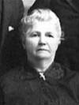

notre ancêtre de la 6ième génération
fiche familiale
| |
Fabien Barriault décède à l'âge de 80 ans. Naissance: 31 décembre 1846 à Ste-Luce-sur-Mer, cté Rimouski Décès: 23 novembre 1927 à Putnam, Connecticut, USA. Sépulture au cimetière Ste-Mary de Putnam C'est lui qui acheta la ferme du rang II de Laverlochère pour son fils Honoré. Dans le répertoire de mariages, inscrit sous "Boisrioux". Sur sa pierre tombale dans le cimetière de Ste-Mary "1854-1927". Profession "Milhand" dans une industrie de textile. Parrain de Léona Barriault. Père: Olivier Barriault/Bariault Mère: Marie-Catherine Gaudreau (sa famille) |
|  |
Épouse: Marie-Anne Morissette Naissance: en 1850 à St-Colomb de Sillery Père: Jean Morissette Mère: Mary-Ann Murphy (sa famille) |
Portrait de la famille de Fabien Barriault vers 1914 à Putnam, Connecticut, USA

de gauche à droite à partir de la rangée arrière :
Eugène Côté, Honoré, Séraphine Charron, Philippe Larouche et Marie
Marie-Anne Morissette, Elisabeth (dite "Lise") et Fabien
de gauche à droite à partir de la rangée arrière :
Eugène Côté, Honoré, Séraphine Charron, Philippe Larouche et Marie
Marie-Anne Morissette, Elisabeth (dite "Lise") et Fabien
   |
Enfant 1 Honoré Barriault décède à l'âge de 54 ans. Naissance: 18 mai 1872 à Sillery. Décès: 2 mai 1927 à Laverlochère, cté Témiscamingue. Mariage: 21 septembre 1891 à St-Paul de Scotstown, cté de Compton. 1ère conjointe: Anna Bourget n. 15 août 1875 d. 24 mars 1913 Mariage: 14 octobre 1914 à St-Isidore de Laverlochère, cté Témiscamingue. 2ème conjointe: Séraphine Charron n. 7 sep 1868 d. 2 déc 1944 (sa famille) |
Enfant 2 Jean-Baptiste Barriault
Naissance: 14 août 1875 à Ste-Luce-sur-Mer, cté Rimouski
Baptême: 15 août 1875 à Ste-Luce-sur-Mer
Parrain Jean-Baptise Barriault, marraine Léontine Sirois.
-------------------------------------------------------------------------------
Enfant 3 Napoléon Barriault
décède à l'âge de 83 ans.
Naissance: 19 mai 1877 à St-Joseph-de-Lepage, cté Rimouski
Baptême: 20 mai 1877 à St-Joseph-de-Lepage
Décès: 20 déc 1960 à Causapscal, cté Matapédia
Mariage: avant 1928
Conjointe: Marie-Rose-de-Lima Lavallée/Vallée
Enfant 1 Sylvio Barriault
Mariage: 25 jul 1934 à Les Méchins, cté Matane
Conjointe: Rose-Anne Béchard
Enfant 2 Angéline Barriault
Mariage: 7 nov 1934 à Les Méchins, cté Matane
Conjoint: Eugène Dugas
Enfant 3 Joseph-Élie Barriault
Mariage: 26 jan 1943 à Lac-au-Saumon, cté Matapédia
Conjointe: Marie-Annette Devin
Enfant 4 Georges Barriault
Mariage: 24 août 1946 à Causapscal, cté Matapédia
Conjointe: Gilberte Beaupré
-------------------------------------------------------------------------------
| |
Enfant 4 Marie Barriault décède à l'âge de 64 ans. Naissance: 25 septembre 1879 à Québec. Décès: 21 octobre 1943 à Woonsocket, Providence, Rhode Island, USA. Dite "Mary". Marraine de Dolora Barriault. Mariage: 27 juillet 1896 à St-Paul de Scotstown, cté de Compton. Conjoint: Philippe Larouche n. en 1876 d. 22 mai 1931 à Woonsocket Père: Jean Larouche Mère: Hélène Gagné |
Naissance: 6 mai 1903 à Dudley, MA, USA
Mariage: 22 nov 1938 à Woonsocket, RI, USA
Conjoint: William Shaffer
Enfant 2 Raoul Larouche
décède à l'âge de 55 ans
Naissance: 14 fév 1905 à Webster, MA, USA
Décès: 7 août 1960 à Orlando, FL, USA
Mariage: 15 fév 1936 à Woonsocket, RI, USA
Conjointe: Aurore Boucher
Enfant 3 Lilian Larouche
Conjoint: M. Bérard
-------------------------------------------------------------------------------
| |
Enfant 5 Elisabeth Barriault Dite "Lise". n. en 1883 Marraine d'Alexina Barriault. Mariage: 26 septembre 1904 à Webster, Massachusetts,USA. Conjoint: Eugène Coté n. 13 avril 1881 à Putnum CT, USA d. 16 octobre 1947 à Woonsocket Père: Joseph Côté Mère: Philomène St-Onge |